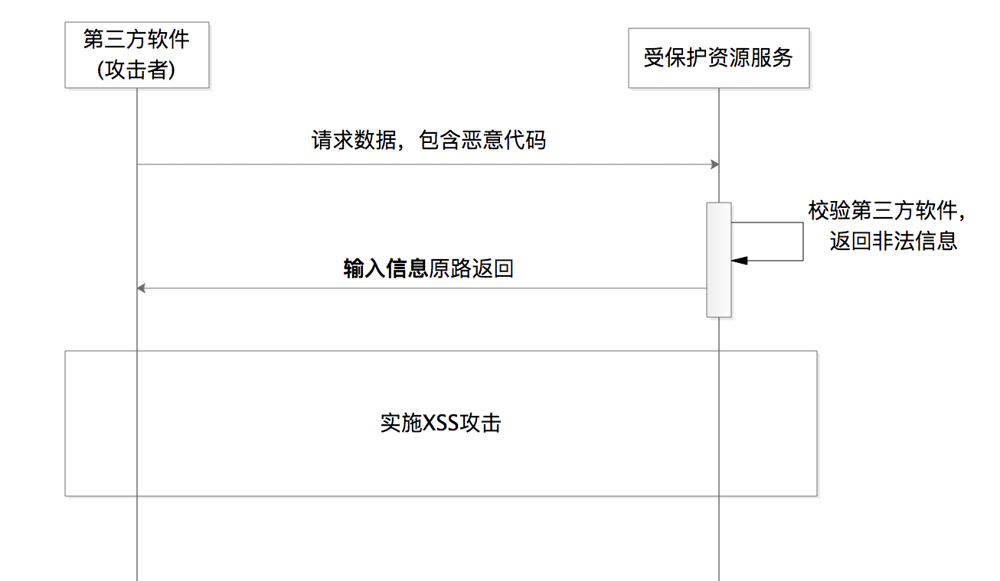

- 00 开篇词 为什么要学OAuth 2.0？.md.html
- 01 OAuth 2.0是要通过什么方式解决什么问题？.md.html
- 02 授权码许可类型中，为什么一定要有授权码？.md.html
- 03 授权服务：授权码和访问令牌的颁发流程是怎样的？.md.html
- 04 在OAuth 2.0中，如何使用JWT结构化令牌？.md.html
- 05 如何安全、快速地接入OAuth 2.0？.md.html
- 06 除了授权码许可类型，OAuth 2.0还支持什么授权流程？.md.html
- 07 如何在移动App中使用OAuth 2.0？.md.html
- 08 实践OAuth 2.0时，使用不当可能会导致哪些安全漏洞？.md.html
- 09 实战：利用OAuth 2.0实现一个OpenID Connect用户身份认证协议..md
- 10 串讲：OAuth 2.0的工作流程与安全问题.md.html
- 11 实战案例：使用Spring Security搭建一套基于JWT的OAuth 2.0架构.md.html
- 12 架构案例：基于OAuth 2.0_JWT的微服务参考架构.md.html
- 13 各大开放平台是如何使用OAuth 2.0的？.md.html
- 14 查漏补缺：OAuth 2.0 常见问题答疑.md.html
- 结束语 把学习当成一种习惯.md.html
- 捐赠
08 实践OAuth 2.0时，使用不当可能会导致哪些安全漏洞？
你好，我是王新栋。
当知道这一讲的主题是 OAuth 2.0 的安全漏洞时，你可能要问了：“OAuth 2.0 不是一种安全协议吗，不是保护 Web API 的吗？为啥 OAuth 2.0 自己还有安全的问题了呢？”
首先，OAuth 2.0 的确是一种安全协议。这没啥问题，但是它有很多使用规范，比如授权码是一个临时凭据只能被使用一次，要对重定向 URI 做校验等。那么，如果使用的时候你没有按照这样的规范来实施，就会有安全漏洞了。
其次，OAuth 2.0 既然是“生长”在互联网这个大环境中，就一样会面对互联网上常见安全风险的攻击，比如跨站请求伪造（Cross-site request forgery，CSRF）、跨站脚本攻击（Cross Site Scripting，XSS）。
最后，除了这些常见攻击类型外，OAuth 2.0 自身也有可被利用的安全漏洞，比如授权码失窃、重定向 URI 伪造。
所以，我们在实践 OAuth 2.0 的过程中，安全问题一定是重中之重。接下来，我挑选了 5 个典型的安全问题，其中 CSRF、XSS、水平越权这三种是互联网环境下常见的安全风险，授权码失窃和重定向 URI 被篡改属于 OAuth2.0“专属”的安全风险。接下来，我就和你一起看看这些安全风险的由来，以及如何应对吧。
CSRF 攻击
对于 CSRF 的定义，《OAuth 2 in Action》这本书里的解释，是我目前看到的最为贴切的解释：恶意软件让浏览器向已完成用户身份认证的网站发起请求，并执行有害的操作，就是跨站请求伪造攻击。
它是互联网上最为常见的攻击之一。我们在实践 OAuth2.0 的过程，其实就是在构建一次互联网的应用。因此，OAuth 2.0 同样也会面临这个攻击。接下来，我通过一个案例和你说明这个攻击类型。
有一个软件 A，我们让它来扮演攻击者，让它的开发者按照正常的流程使用极客时间。当该攻击者授权后，拿到授权码的值 codeA 之后，“立即按下了暂停键”，不继续往下走了。那它想干啥呢，我们继续往下看。
这时，有一个第三方软件 B，比如咱们的 Web 版极客时间，来扮演受害者吧。当然最终的受害者是用户，这里是用 Web 版极客时间来作为被软件 A 攻击的对象。
极客时间用于接收授权码的回调地址为 https://time.geekbang.org/callback。有一个用户 G 已经在极客时间的平台登录，且对极客时间进行了授权，也就是用户 G 已经在极客时间平台上有登录态了。
如果此时攻击者软件 A，在自己的网站上构造了一个恶意页面：
<html>
<img src ="https://time.geekbang.org/callback？code=codeA">
</html>
如果这个时候用户 G 被攻击者软件 A 诱导而点击了这个恶意页面，那结果就是，极客时间使用 codeA 值去继续 OAuth 2.0 的流程了。这其实就走完了一个 CSRF 攻击的过程，如下图所示：

图1 CSRF攻击过程
如果我们将 OAuth 2.0 用于了身份认证，那么就会造成严重的后果，因为用户 G 使用的极客时间的授权上下文环境跟攻击者软件 A 的授权上下文环境绑定在了一起。为了解释两个上下文环境绑定在一起可能带来的危害，我们还是拿极客时间来举例。
假如，极客时间提供了用户账号和微信账号做绑定的功能，也就是说用户先用自己的极客时间的账号登录，然后可以绑定微信账号，以便后续可以使用微信账号来登录。在绑定微信账号的时候，微信会咨询你是否给极客时间授权，让它获取你在微信上的个人信息。这时候，就需要用到 OAuth 2.0 的授权流程。
如果攻击者软件 A，通过自己的极客时间账号事先做了上面的绑定操作，也就是说攻击者已经可以使用自己的微信账号来登录极客时间了。那有一天，软件 A 想要“搞事情”了，便在发起了一个授权请求后构造了一个攻击页面，里面包含的模拟代码正如我在上面描述的那样，来诱导用户 G 点击。
而用户 G 已经用极客时间的账号登录了极客时间，此时正要去做跟微信账号的绑定。如果这个时候他刚好点击了攻击者 A“种下”的这个恶意页面，那么后面换取授权的访问令牌 access_token，以及通过 accces_token 获取的信息就都是攻击者软件 A 的了。
这就相当于，用户 G 将自己的极客时间的账号跟攻击者软件 A 的微信账号绑定在了一起。这样一来，后续攻击者软件 A 就能够通过自己的微信账号，来登录用户 G 的极客时间了。这个后果可想而知。
那如何避免这种攻击呢？方法也很简单，实际上 OAuth 2.0 中也有这样的建议，就是使用 state 参数，它是一个随机值的参数。
还是以上面的场景为例，当极客时间请求授权码的时候附带一个自己生成 state 参数值，同时授权服务也要按照规则将这个随机的 state 值跟授权码 code 一起返回给极客时间。这样，当极客时间接收到授权码的时候，就要在极客时间这一侧做一个 state 参数值的比对校验，如果相同就继续流程，否则直接拒绝后续流程。
在这样的情况下，软件 A 要想再发起 CSRF 攻击，就必须另外构造一个 state 值，而这个 state 没那么容易被伪造。这本就是一个随机的数值，而且在生成时就遵从了被“猜中”的概率要极小的建议。比如，生成一个 6 位字母和数字的组合值，显然要比生成一个 6 位纯数字值被“猜中”的概率要小。所以，软件 B 通过使用 state 参数，就实现了一个基本的防跨站请求伪造保护。
我们再来总结下，这个攻击过程本质上就是，软件 A（攻击者）用自己的授权码 codeA 的值，通过 CSRF 攻击，“替换”了软件 B 的授权码的值。
接下来，我再给你看一种互联网常见的安全攻击类型，也就是 XSS 攻击。
XSS 攻击
XSS 攻击的主要手段是将恶意脚本注入到请求的输入中，攻击者可以通过注入的恶意脚本来进行攻击行为，比如搜集数据等。截止到 2020 年 6 月 23 日，在 OWASP（一个开源的 Web 应用安全项目）上查看安全漏洞排名的话，它依然在TOP10榜单上面，可谓“大名鼎鼎”。
网络上有很多关于 XSS 的介绍了，我推荐你看看《XSS 攻击原理分析与防御技术》这篇文章，它很清晰地分析了 XSS 的原理以及防御方法。今天，我们主要看看它是怎么在 OAuth 2.0 的流程中“发挥”的。
当请求抵达受保护资源服务时，系统需要做校验，比如第三方软件身份合法性校验、访问令牌 access_token 的校验，如果这些信息都不能被校验通过，受保护资源服务就会返回错误的信息。

图2 XSS攻击过程
大多数情况下，受保护资源都是把输入的内容，比如 app_id invalid、access_token invalid ，再回显一遍，这时就会被 XSS 攻击者捕获到机会。试想下，如果攻击者传入了一些恶意的、搜集用户数据的 JavaScript 代码，受保护资源服务直接原路返回到用户的页面上，那么当用户触发到这些代码的时候就会遭受到攻击。
因此，受保护资源服务就需要对这类 XSS 漏洞做修复，而具体的修复方法跟其它网站防御 XSS 类似，最简单的方法就是对此类非法信息做转义过滤，比如对包含